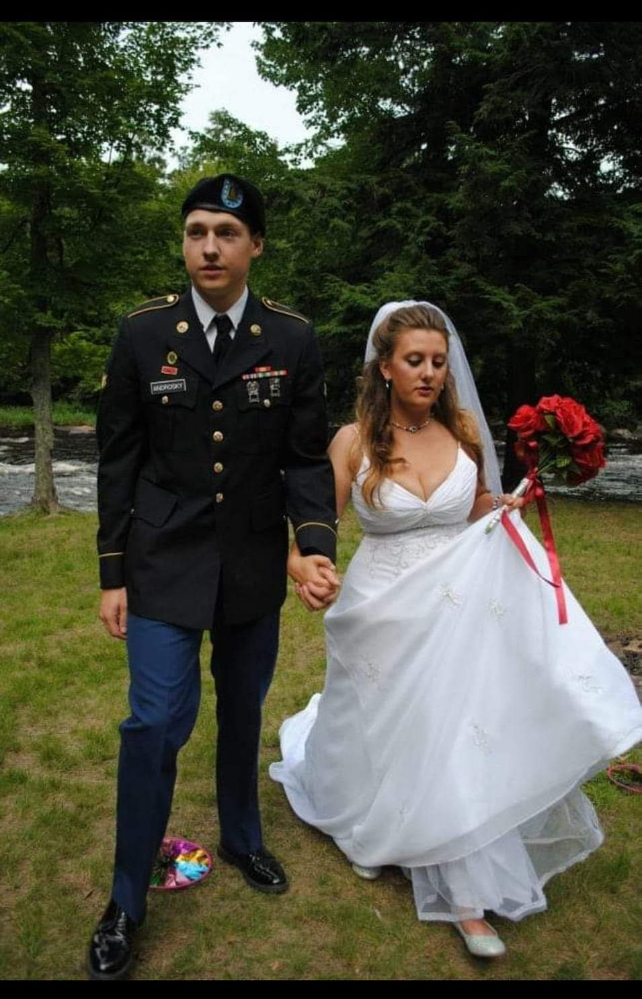
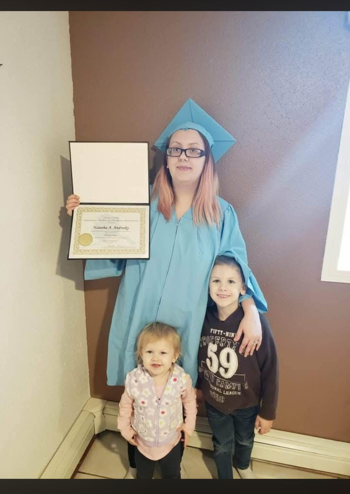
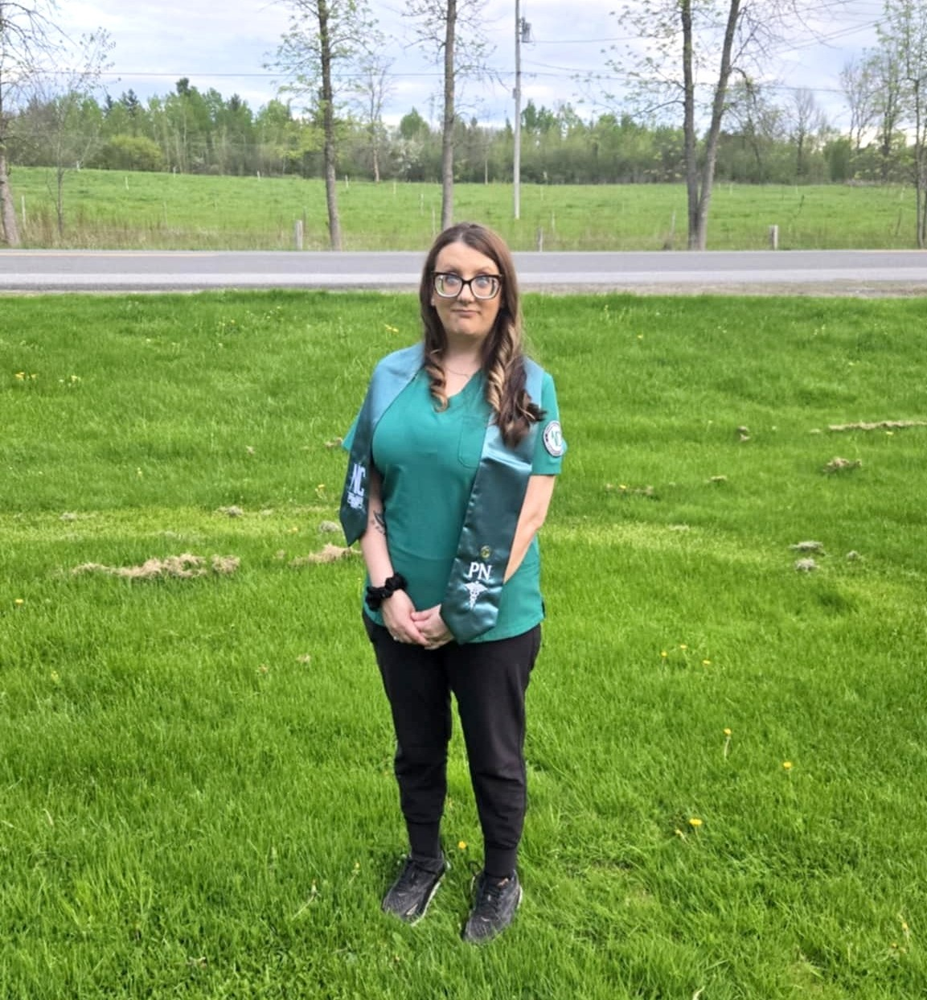

Natasha Androsky
Natasha's life has been shaped by perseverance, family, and a commitment to personal growth. From earning her GED while raising two children to pursuing new career goals in her 30s, she continues to challenge herself and build a better future for her family.

A New Chapter
Natasha's wedding marked the beginning of a new chapter in her life. Her husband has continued to be a source of encouragement as she pursues her education, works toward new career goals, and balances the demands of family life.
A Step Forward
While living in Alaska and raising two children, Natasha earned her GED and took an important step toward a future she once might not have imagined. Her achievement reflects her determination to continue learning and create new opportunities for herself and her family.


Reaching a Goal
After continuing her education, Natasha earned her Licensed Practical Nurse (LPN) qualification and entered the nursing field. This accomplishment represents an important part of her educational journey, even as she later chose to pursue a different career path.